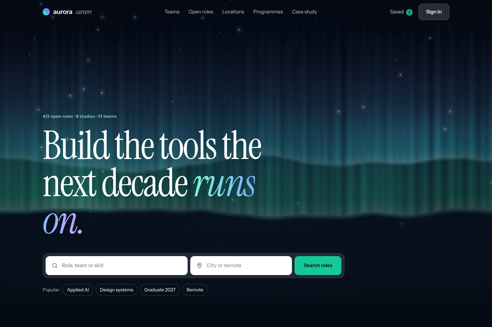

10 — Employer brand
A careers site that is not a job list.
Teams, mission and location given equal standing beside role search, in one employer brand system.

- Type
- Concept · self-directed
- Discipline
- Web · UI · Brand
- Deliverables
- Employer brand system, discovery surfaces, search pattern
- Surfaces
- 3 discovery surfaces
01The brief
Careers sites reduce to a filtered job list, and the employer story ends up as a footer link nobody follows.
The brief was to make teams, mission and location the reason someone applies, without demoting the search that candidates actually arrive for.
02Design decisions
- Search sits above the fold, but teams and launch programmes are given equal weight beside it.
- Three discovery surfaces — teams, job categories, locations — replace a single filtered list.
- Editorial cards carry the studio’s own tone, so brand and recruitment run on one system.
03Outcome
A careers experience where role search and employer storytelling occupy the same page, with three discovery routes into the same set of roles.
3Discovery surfacesTeams, categories, locations.
1Shared systemBrand and recruitment together.
1Search patternAbove the fold, not the whole page.
A concept project designed in-house by Yonder Tech, not a client engagement. Figures describe the delivered design system, not commercial results.